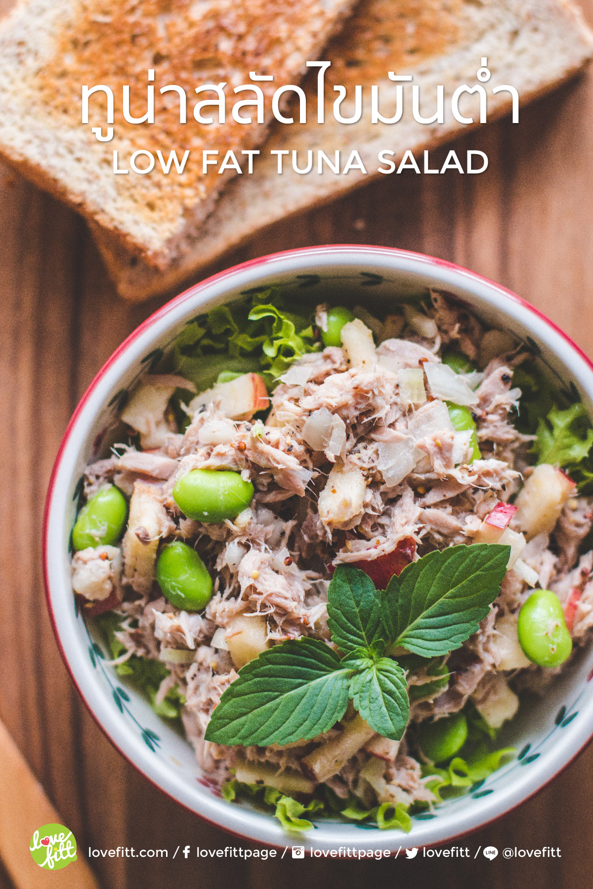

ทูน่าสลัด เมนูทำง่าย เครื่องปรุงไม่เยอะ แต่ทานคู่กับอะไรก็อร่อย ไม่ว่าจะเป็นผักสลัด แครกเกอร์ หรือขนมปัง แถมสูตรนี้ลดพลังงาน และไขมันลง โดยใช้ low fat กรีกโยเกิร์ต ให้โปรตีนแน่นๆ ใครกำลังเสริมโปรตีน จัดเป็นหนึ่งใน list เมนูเพื่อลดน้ำนักได้เลย
เมนู ทูน่าสลัด เป็นเมนูหนึ่งที่สามารถปรุงได้หลากหลายรูปแบบ เรียกว่าสร้างสรรค์ได้ตามแต่จินตนาการของผู้ปรุง จะแต่ง จะเติม จะเสริมวัตถุดิบอะไรลงไปก็ได้ แถมยังสามารถนำไปทานคู่กับอะไรก็เข้ากันดี ทั้งผักสลัดสดๆ แตงกวา จะท็อปปิ้งบนแครกเกอร์ หรือ สอดไส้ขนมปัง ทำเป็นแซนวิช ก็ได้
ถือเป็นทางเลือกนึงที่ใช้ทานเพื่อเป็นการเสริมโปรตีน เป็นตัวเลือกที่ดีสำหรับคนที่กำลังคุมอาหาร 1 กระป๋องของปลาทูน่าในน้ำแร่ จะมีโปรตีนประมาณ 16 กรัมเลยทีเดียว แถมโซเดียมต่ำ กว่ารสชาติอื่นๆ อีกด้วย หรือใครชอบทูน่ากระป๋องในน้ำเกลือก็ใช้แทนกันได้ รสชาติเข้มข้นกว่า แต่ก็จะมีปริมาณโซเดียมมากกว่า
โดยปรกติจะเด่นที่ความหอมจากหอมใหญ่ซอย ปรุงได้ทั้งแบบสด และ ทำหอมให้สุกเสียก่อนก็ได้ ได้ความมันจากมายองเนส จึงทำให้พลังงานในเมนูทูน่าสลัดแบบดั้งเดิมค่อนข้างสูง สำหรับเครื่องปรุงรสนั้น ก็แสนเรียบง่าย มีแค่เกลือ และพริกไทยเท่านั้น
เมนูนี้ เป็นเมนูนึงที่ทำบ่อยๆ เพราะคนในบ้านทุกคนทานได้ ทานคู่กับขนมปังตอนเช้า หรือแก้หิวตอนดึกๆ เวลาทำจะทำทิ้งไว้ในตู้เย็น สามารถเก็บได้ 3-4 วัน (แต่ส่วนมากจะหมดก่อนที่จะเสีย) ถ้าจะทำเก็บไว้เผื่อสมาชิกคนอื่นๆ จะไม่ใส่ ผัก หรือ ผลไม้ลงไปในตัวสลัดทูน่า เนื่องจาก เวลาผัก และผลไม้โดนความเค็ม จะช้ำ และคายน้ำออกมา ทำให้แฉะ และ เน่าเสียได้ง่าย จึงใช้เพียงแค่หอมหัวใหญ่ และ กระเทียมเล็กน้อย ซอยให้ละเอียดๆ หน่อย คลุกเคล้ากับทูน่า และเครื่องปรุงแบบเดียวกัน ก็อร่อยไม่แพ้กัน ส่วนใครที่ชอบสูตรเติมผัก ผลไม้ ตามสูตรครั้งนี้ แนะนำให้ทานให้หมดภายในครั้งเดียวจะอร่อยที่สุด
ทูน่าสลัด ไขมันต่ำ สูตรนี้ดัดแปลงจากสูตรดั้งเดิม แต่เปลี่ยนการใช้มายองเนส มาเป็น กรีกโยเกิร์ตรสธรรมชาติ ที่ให้ความเปรี้ยว และมันคล้ายกับมายองเนส แต่ให้ไขมันต่ำ และได้ประโยชน์จากจุลินทรย์ที่มีชีวิต (โปรโบโอติก ) แถมเมนูนี้ยังอุดมไปด้วยโปรตีน ไฟเบอร์ และไขมันดีจากปลาทูน่า ถั่วแระญี่ปุ่น อีกด้วย
เพิ่มเติมกลิ่นหอมๆ ที่เป็นเอกลักษณ์ จากหอมหัวใหญ่สด รสชาติที่เข้มข้นจากดิจองมัสตาร์ด (Dijon mustard) และ ความเผ็ดร้อนแต่อ่อนโยนจากพริกไทยดำบดหยาบๆ ทำให้เมนูนี้เป็นเมนูที่จะทานคู่กับขนมปัง หรือ ใส่ในสลัดผัก ก็อร่อย รับรองไม่เลี่ยนแน่นอน
เริ่มจากนำทูน่ากระป๋องชนิดในน้ำแร่ มาแยกน้ำออก เอาแต่เนื้อภายใน ใช้ช้อน หรือซ้อมซุยเนื้อปลาทูน่าในกระป๋องเพื่อให้ร่วนขึ้น จากนั้น มาคลายความเย็นถั่วแระญี่ปุ่นแช่แข็งด้วยการเเช่ในน้ำสะอาด นำมาแกะเอาแต่เฉพาะแมล็ด ซอยหอมหัวใหญ่ และแอปเปิ้ล เป็นชิ้นเล็กๆ แล้วนำส่วนผสมทั้งหมดลงในโถผสม
ปรุงรสชาติด้วย เกลือ พริกไทยบดหยาบ ดิจองมัสตาร์ด กรีกโยเกิร์ต และ น้ำตาลทรายแดง คลุกเคล้าให้เข้ากัน ตักขึ้นเสิร์ฟพร้อมสลัดผัก และ ขนมปังโฮลวีท พลังงานตามสูตร สำหรับปลาทูน่า 1 กระป๋อง จะอยู่ที่ 306 kcal ส่วนพลังงาน 1 ถ้วยตามแบบที่เสิร์ฟในวีดีโอสาธิต จะอยู่ที่ 153 kcal พร้อมด้วยขนมปังโฮลวีท 1 แผ่น ให้พลังงาน 80 kcal พอดีๆ ใครชอบมื้ออาหารที่ทำง่ายๆ รสชาติอร่อย โปรตีนแน่นๆ ก็ลองเอาไปทำดูได้เลย
มหาวิทยาลัยขอนแก่น
Khon kaen University
เบอร์โทรศัพท์
043-009700
ที่อยู่
123 หมู่ 16 ถ.มิตรภาพ ต.ในเมือง อ.เมือง จ.ขอนแก่น 40002